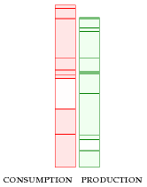
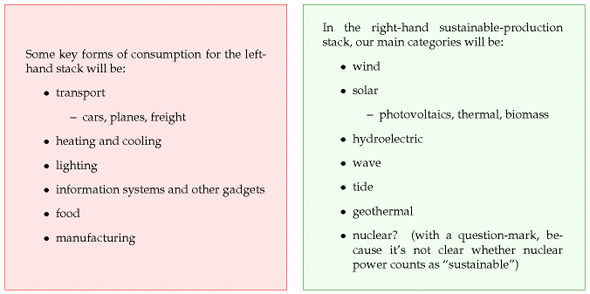
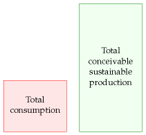
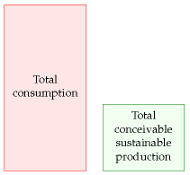
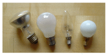

2 The balance sheet

Nature cannot be fooled
Richard Feynman
Let’s talk about energy consumption and energy production. At the moment, most of the energy the developed world consumes is produced from fossil fuels; that’s not sustainable. Exactly how long we could keep living on fossil fuels is an interesting question, but it’s not the question we’ll address in this book. I want to think about living without fossil fuels.
We’re going to make two stacks. In the left-hand, red stack we will add up our energy consumption, and in the right-hand, green stack, we’ll add up sustainable energy production. We’ll assemble the two stacks gradually, adding items one at a time as we discuss them.
The question addressed in this book is “can we conceivably live sustainably?” So, we will add up all conceivable sustainable energy sources and put them in the right-hand, green stack.
In the left-hand, red stack, we’ll estimate the consumption of a “typical moderately-affluent person;” I encourage you to tot up an estimate of your own consumption, creating your own personalized left-hand stack too. Later on we’ll also find out the current average energy consumption of Europeans and Americans.

As we estimate our consumption of energy for heating, transportation, manufacturing, and so forth, the aim is not only to compute a number for the left-hand stack of our balance sheet, but also to understand what each number depends on, and how susceptible to modification it is.
In the right-hand, green stack, we’ll add up the sustainable production estimates for the United Kingdom. This will allow us to answer the question “can the UK conceivably live on its own renewables?”
Whether the sustainable energy sources that we put in the right-hand stack are economically feasible is an important question, but let’s leave that question to one side, and just add up the two stacks first. Sometimes people focus too much on economic feasibility and they miss the big picture. For example, people discuss “is wind cheaper than nuclear?” and forget to ask “how much wind is available?” or “how much uranium is left?”
The outcome when we add everything up might look like this:

If we find consumption is much less than conceivable sustainable production, then we can say “good, maybe we can live sustainably; let’s look into the economic, social, and environmental costs of the sustainable alternatives, and figure out which of them deserve the most research and development; if we do a good job, there might not be an energy crisis.”
On the other hand, the outcome of our sums might look like this:

– a much bleaker picture. This picture says “it doesn’t matter what the economics of sustainable power are: there’s simply not enough sustainable power to support our current lifestyle; massive change is coming.”
Energy and power

Figure 2.1. Distinguishing energy and power. Each of these 60W light bulbs has a power of 60W when switched on; it doesn’t have an “energy” of 60W. The bulb uses 60W of electrical power when it’s on; it emits 60 W of power in the form of light and heat (mainly the latter).
Most discussions of energy consumption and production are confusing because of the proliferation of units in which energy and power are measured, from “tons of oil equivalent” to “terawatt-hours” (TWh) and “exajoules” (EJ). Nobody but a specialist has a feeling for what “a barrel of oil” or “a million BTUs” means in human terms. In this book, we’ll express everything in a single set of personal units that everyone can relate to.
The unit of energy I have chosen is the kilowatt-hour (kWh). This quantity is called “one unit” on electricity bills, and it costs a domestic user about 10p in the UK in 2008. As we’ll see, most individual daily choices involve amounts of energy equal to small numbers of kilowatt-hours.
When we discuss powers (rates at which we use or produce energy), the main unit will be the kilowatt-hour per day (kWh/d). We’ll also occasionally use the watt (40 W ≈ 1kWh/d) and the kilowatt (1 kW = 1000 W = 24 kWh/d), as I’ll explain below. The kilowatt-hour per day is a nice human-sized unit: most personal energy-guzzling activities guzzle at a rate of a small number of kilowatt-hours per day. For example, one 40 W lightbulb, kept switched on all the time, uses one kilowatt-hour per day. Some electricity companies include graphs in their electricity bills, showing energy consumption in kilowatt-hours per day. I’ll use the same unit for all forms of power, not just electricity. Petrol consumption, gas consumption, coal consumption: I’ll measure all these powers in kilowatthours per day. Let me make this clear: for some people, the word “power” means only electrical energy consumption. But this book concerns all forms of energy consumption and production, and I will use the word “power” for all of them.
One kilowatt-hour per day is roughly the power you could get from one human servant. The number of kilowatt-hours per day you use is thus the effective number of servants you have working for you.
volume is measured in litres
flow is measured in litres per minute
energy is measured in kWh
power is measured in kWh per day
People use the two terms energy and power interchangeably in ordinary speech, but in this book we must stick rigorously to their scientific definitions. Power is the rate at which something uses energy.
Maybe a good way to explain energy and power is by an analogy with water and water-flow from taps. If you want a drink of water, you want a volume of water – one litre, perhaps (if you’re thirsty). When you turn on a tap, you create a flow of water – one litre per minute, say, if the tap yields only a trickle; or 10 litres per minute, from a more generous tap. You can get the same volume (one litre) either by running the trickling tap for one minute, or by running the generous tap for one tenth of a minute. The volume delivered in a particular time is equal to the flow multiplied by the time:
volume = flow × time.
We say that a flow is a rate at which volume is delivered. If you know the volume delivered in a particular time, you get the flow by dividing the volume by the time:
flow = volume / time.
energy is measured in kWh or MJ
power is measured in kWh per day or kW or W (watts) or MW (megawatts) or GW (gigawatts) or TW (terawatts)
Here’s the connection to energy and power. Energy is like water volume: power is like water flow. For example, whenever a toaster is switched on, it starts to consume power at a rate of one kilowatt. It continues to consume one kilowatt until it is switched off. To put it another way, the toaster (if it’s left on permanently) consumes one kilowatt-hour (kWh) of energy per hour; it also consumes 24 kilowatt-hours per day.
The longer the toaster is on, the more energy it uses. You can work out the energy used by a particular activity by multiplying the power by the duration:
energy= power × time.
The joule is the standard international unit of energy, but sadly it’s far too small to work with. The kilowatt-hour is equal to 3.6 million joules (3.6 megajoules).
Powers are so useful and important, they have something that water flows don’t have: they have their own special units. When we talk of a flow, we might measure it in “litres per minute,” “gallons per hour,” or “cubic-metres per second;” these units’ names make clear that the flow is “a volume per unit time.” A power of one joule per second is called one watt. 1000 joules per second is called one kilowatt. Let’s get the terminology straight: the toaster uses one kilowatt. It doesn’t use “one kilowatt per second.” The “per second” is already built in to the definition of the kilowatt: one kilowatt means “one kilojoule per second.” 1 Similarly we say “a nuclear power station generates one gigawatt.” One gigawatt, by the way, is one billion watts, one million kilowatts, or 1000 megawatts. So one gigawatt is a million toasters. And the “g”s in gigawatt are pronounced hard, the same as in “giggle.” And, while I’m tapping the blackboard, we capitalize the “g” and “w” in “gigawatt” only when we write the abbreviation “GW.”
Please, never, ever say “one kilowatt per second,” 2 “one kilowatt per hour,” or “one kilowatt per day;” none of these is a valid measure of power. The urge that people have to say “per something” when talking about their toasters is one of the reasons I decided to use the “kilowatt-hour per day” as my unit of power. I’m sorry that it’s a bit cumbersome to say and to write.
1TWh (one terawatt-hour) is equal to one billion kWh.
Here’s one last thing to make clear: if I say “someone used a gigawatthour of energy,” I am simply telling you how much energy they used, not how fast they used it. Talking about a gigawatt-hour doesn’t imply the energy was used in one hour. You could use a gigawatt-hour of energy by switching on one million toasters for one hour, or by switching on 1000 toasters for 1000 hours.
As I said, I’ll usually quote powers in kWh/d per person. One reason for liking these personal units is that it makes it much easier to move from talking about the UK to talking about other countries or regions. For example, imagine we are discussing waste incineration and we learn that UK waste incineration delivers a power of 7 TWh per year and that Denmark’s waste incineration delivers 10 TWh per year. Does this help us say whether Denmark incinerates “more” waste than the UK? While the total power produced from waste in each country may be interesting, I think that what we usually want to know is the waste incineration per person. (For the record, that is: Denmark, 5 kWh/d per person; UK, 0.3 kWh/d per person. So Danes incinerate about 13 times as much waste as Brits.) To save ink, I’ll sometimes abbreviate “per person” to “/p”. By discussing everything per-person from the outset, we end up with a more transportable book, one that will hopefully be useful for sustainable energy discussions worldwide.
Picky details
Isn’t energy conserved? We talk about “using” energy, but doesn’t one of the laws of nature say that energy can’t be created or destroyed?
Yes, I’m being imprecise. This is really a book about entropy – a trickier thing to explain. When we “use up” one kilojoule of energy, what we’re really doing is taking one kilojoule of energy in a form that has low entropy (for example, electricity), and converting it into an exactly equal amount of energy in another form, usually one that has much higher entropy (for example, hot air or hot water). When we’ve “used” the energy, it’s still there; but we normally can’t “use” the energy over and over again, because only low entropy energy is “useful” to us. Sometimes these different grades of energy are distinguished by adding a label to the units: one kWh(e) is one kilowatt-hour of electrical energy – the highest grade of energy. One kWh(th) is one kilowatt-hour of thermal energy – for example the energy in ten litres of boiling-hot water. Energy lurking in higher-temperature things is more useful (lower entropy) than energy in tepid things. A third grade of energy is chemical energy. Chemical energy is high-grade energy like electricity.
It’s a convenient but sloppy shorthand to talk about the energy rather than the entropy, and that is what we’ll do most of the time in this book. Occasionally, we’ll have to smarten up this sloppiness; for example, when we discuss refrigeration, power stations, heat pumps, or geothermal power.
Are you comparing apples and oranges? Is it valid to compare different forms of energy such as the chemical energy that is fed into a petrolpowered car and the electricity from a wind turbine?
By comparing consumed energy with conceivable produced energy, I do not wish to imply that all forms of energy are equivalent and interchangeable. The electrical energy produced by a wind turbine is of no use to a petrol engine; and petrol is no use if you want to power a television. In principle, energy can be converted from one form to another, though conversion entails losses. Fossil-fuel power stations, for example, guzzle chemical energy and produce electricity (with an efficiency of 40% or so). And aluminium plants guzzle electrical energy to create a product with high chemical energy – aluminium (with an efficiency of 30% or so).
In some summaries of energy production and consumption, all the different forms of energy are put into the same units, but multipliers are introduced, rating electrical energy from hydroelectricity for example as being worth 2.5 times more than the chemical energy in oil. This bumping up of electricity’s effective energy value can be justified by saying, “well, 1 kWh of electricity is equivalent to 2.5 kWh of oil, because if we put that much oil into a standard power station it would deliver 40% of 2.5 kWh, which is 1 kWh of electricity.” In this book, however, I will usually use a one-to-one conversion rate when comparing different forms of energy. It is not the case that 2.5 kWh of oil is inescapably equivalent to 1 kWh of electricity; that just happens to be the perceived exchange rate in a worldview where oil is used to make electricity. Yes, conversion of chemical energy to electrical energy is done with this particular inefficient exchange rate. But electrical energy can also be converted to chemical energy. In an alternative world (perhaps not far-off) with relatively plentiful electricity and little oil, we might use electricity to make liquid fuels; in that world we would surely not use the same exchange rate – each kWh of gasoline would then cost us something like 3 kWh of electricity! I think the timeless and scientific way to summarize and compare energies is to hold 1 kWh of chemical energy equivalent to 1 kWh of electricity. My choice to use this one-to-one conversion rate means that some of my sums will look a bit different from other people’s. (For example, BP’s Statistical Review of World Energy rates 1 kWh of electricity as equivalent to 100/38 ≈ 2.6 kWh of oil; on the other hand, the government’s Digest of UK Energy Statistics uses the same one-to-one conversion rate as me.) And I emphasize again, this choice does not imply that I’m suggesting you could convert either form of energy directly into the other. Converting chemical energy into electrical energy always wastes energy, and so does converting electrical into chemical energy.
Physics and equations
Throughout the book, my aim is not only to work out numbers indicating our current energy consumption and conceivable sustainable production,but also to make clear what these numbers depend on. Understanding what the numbers depend on is essential if we are to choose sensible policies to change any of the numbers. Only if we understand the physics behind energy consumption and energy production can we assess assertions such as “cars waste 99% of the energy they consume; we could redesign cars so that they use 100 times less energy.” Is this assertion true? To explain the answer, I will need to use equations like
kinetic energy = ½mv2
However, I recognize that to many readers, such formulae are a foreign language. So, here’s my promise: I’ll keep all this foreign-language stuff in technical chapters at the end of the book. Any reader with a high-school/secondaryschool qualification in maths, physics, or chemistry should enjoy these technical chapters. The main thread of the book (from chapter 1 to chapter 32) is intended to be accessible to everyone who can add, multiply, and divide. It is especially aimed at our dear elected and unelected representatives, the Members of Parliament.
One last point, before we get rolling: I don’t know everything about energy. I don’t have all the answers, and the numbers I offer are open to revision and correction. (Indeed I expect corrections and will publish them on the book’s website.) The one thing I am sure of is that the answers to our sustainable energy questions will involve numbers ; any sane discussion of sustainable energy requires numbers. This book’s got ’em, and it shows how to handle them. I hope you enjoy it!
Notes and further reading
I’ve provided a chart to help you translate between kWh per day per person and the other major units in which powers are discussed.
The “per second” is already built in to the definition of the kilowatt. Other examples of units that, like the watt, already have a “per time” built in are the knot – “our yacht’s speed was ten knots!” (a knot is one nautical mile per hour); the hertz – “I could hear a buzzing at 50 hertz” (one hertz is a frequency of one cycle per second); the ampere – “the fuse blows when the current is higher than 13 amps” ( not 13 amps per second); and the horsepower – “that stinking engine delivers 50 horsepower” ( not 50 horsepower per second, nor 50 horsepower per hour, nor 50 horsepower per day, just 50 horsepower).↩︎
Please, never, ever say “one kilowatt per second.” There are specific, rare exceptions to this rule. If talking about a growth in demand for power, we might say “British demand is growing at one gigawatt per year.” In Chapter 26 when I discuss fluctuations in wind power, I will say “one morning, the power delivered by Irish windmills fell at a rate of 84 MW per hour.” Please take care! Just one accidental syllable can lead to confusion: for example, your electricity meter’s reading is in kilowatt-hours (kWh), not ‘kilowatts-per-hour’.↩︎